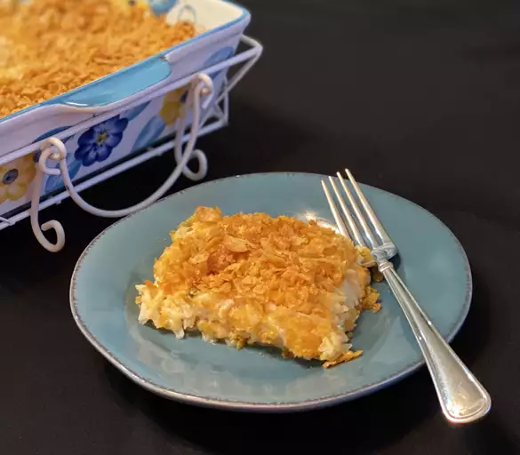

Grandma's Hash Brown Casserole

This hash brown casserole is absolutely the best hash brown dish I've ever had. It's my friend's grandma's recipe. Kentucky grandmas sure know how to cook!
Ingrediants
- Frozen hash browns: This easy recipe starts with a package of (thawed) frozen hash brown potatoes.
- Canned soup: A can of condensed cream of chicken soup adds creaminess and flavor.
- Cheddar: Use pre-shredded Cheddar cheese or shred your own cheese from the block.
- Sour cream: An 8-ounce container of sour cream adds richness and tangy flavor.
- Butter: Mix a stick of melted butter into the casserole and drizzle the casserole with another stick of melted butter.
- Onion: You’ll need ½ cup of chopped onion.
- Seasonings: Season the hash brown casserole with salt and ground black pepper.
- Cornflakes: A cup of crushed cornflakes is the perfect crunchy topping.
Steps
- Preheat the oven to 350 degrees F (175 degrees C).
- Mix hash browns, Cheddar cheese, condensed soup, sour cream, 1/2 of the melted butter, onion, salt, and pepper in a bowl. Transfer mixture to a 9x13-inch baking dish. Sprinkle cornflakes on top, then drizzle with remaining melted butter.
- Bake in the preheated oven until sauce is bubbly and top is golden brown, 1 to 1 ½ hours.